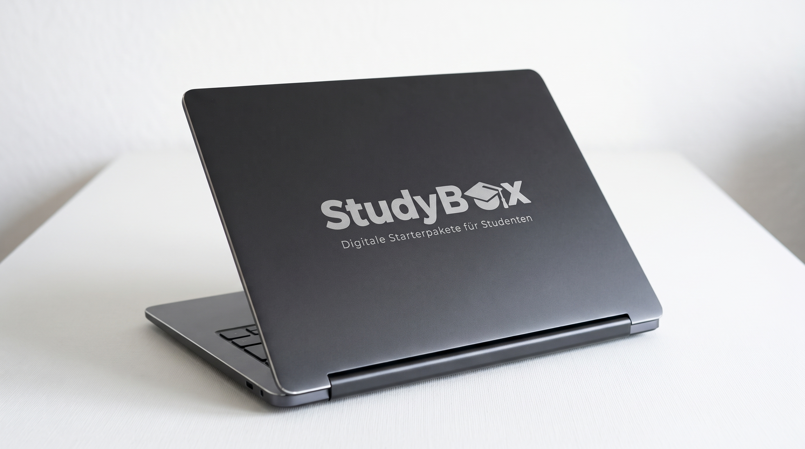

Lea M.
★★★★★
Das Bundle ist eine gute Ausstattung für mein BWL-Studium. Mit Notebook und Monitor kann ich Präsentationen und Datenanalysen bequem bearbeiten.


Das Wirtschaft & Digitales Bundle wurde speziell für Studierende wirtschaftlicher und digitaler Studiengänge entwickelt. Es unterstützt dich bei Präsentationen, Datenanalysen, Geschäftsprozessen, Projektarbeiten sowie der täglichen Arbeit mit Office- und Business-Anwendungen.
Moderne wirtschaftliche Studiengänge arbeiten zunehmend digital. Präsentationen, Datenanalysen, Tabellenkalkulationen, Projektmanagement und digitale Geschäftsmodelle gehören mittlerweile zum Studienalltag. Das Wirtschaft & Digitales Bundle bietet die passende Ausstattung für effizientes und professionelles Arbeiten in Studium, Praxisphase und Beruf.
Wirtschaft und Management: Für BWL, zum Beispiel in Industrie, Handel, Bank- und Versicherungswesen, Marketing, Personal und Logistik, sowie für Immobilienwirtschaft gelten 8 GB Arbeitsspeicher und 256 GB interner Speicher als Richtwert. Ein Tablet ist nützlich fürs Mitschreiben.
Wirtschaft und Digitales: Für Wirtschaftsinformatik und Digital Business Management werden 16 GB Arbeitsspeicher und 512 GB interner Speicher empfohlen. Ein Tablet ist optional.
Die Werte sind Richtwerte, keine festen Vorgaben. Maßgeblich sind die Anforderungen deiner Hochschule und der verwendeten Software.

Das Notebook bildet die zentrale Arbeitsplattform des Bundles. Es eignet sich für Office-Anwendungen, Datenanalysen, Präsentationen, digitale Geschäftsprozesse und Projektarbeiten.

Der Monitor erweitert die Arbeitsfläche und ermöglicht komfortables Arbeiten mit Tabellen, Präsentationen, Geschäftsanalysen und mehreren Anwendungen gleichzeitig.

Das Tablet unterstützt mobiles Lernen und den schnellen Zugriff auf Vorlesungsunterlagen, Präsentationen und digitale Skripte.

Mit dem Tablet-Stift können Notizen, Mindmaps, Geschäftsmodelle und Lernzusammenfassungen direkt digital erstellt und bearbeitet werden.

Die kabellose Tastatur unterstützt effizientes Arbeiten bei Hausarbeiten, Berichten, Analysen, Geschäftsplänen und Präsentationen.

Die ergonomische Maus sorgt für komfortables Arbeiten bei Analysen, Präsentationen, Tabellenkalkulationen und täglicher Büroarbeit.

Die Dockingstation verbindet Monitor und Zubehör mit nur einem Anschluss und ermöglicht einen professionellen Arbeitsplatz für Studium und Praxisphase.

Die gepolsterte Laptoptasche schützt Notebook und Zubehör beim täglichen Transport zwischen Hochschule, Unternehmen und Zuhause.
Das Bundle ist eine gute Ausstattung für mein BWL-Studium. Mit Notebook und Monitor kann ich Präsentationen und Datenanalysen bequem bearbeiten.
Die Zusammenstellung passt gut zu meinem digitalen Studienalltag. Besonders praktisch ist der schnelle Wechsel zwischen mobilem und stationärem Arbeiten.
Eine hilfreiche Ausstattung für Präsentationen und Projektarbeiten. Auf dem Tablet kann ich meine Mitschriften übersichtlich organisieren.